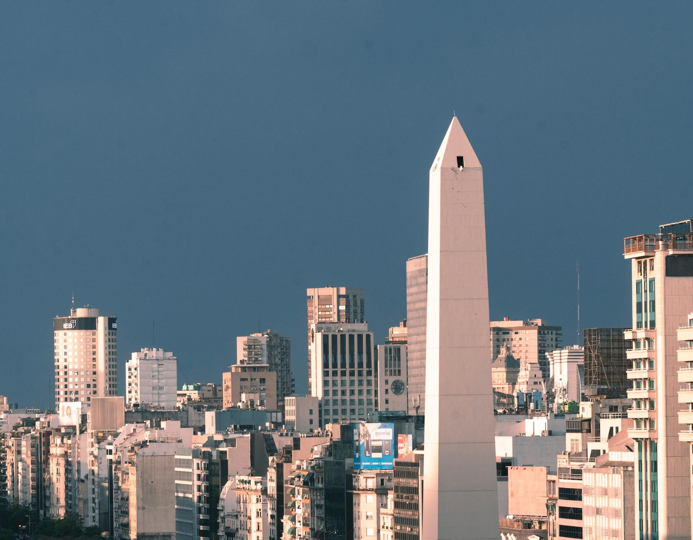
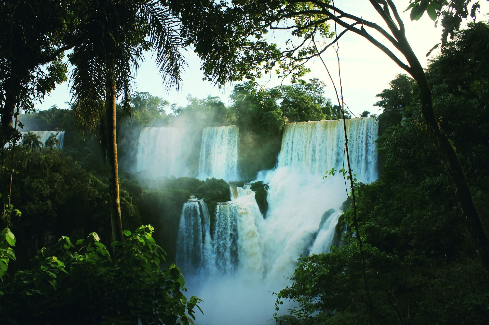
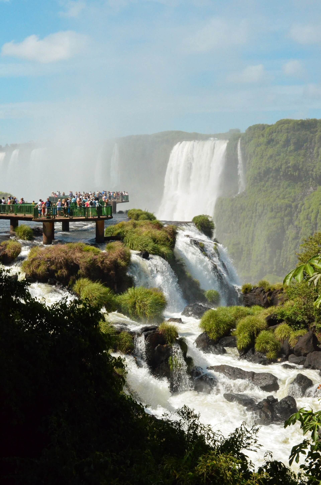
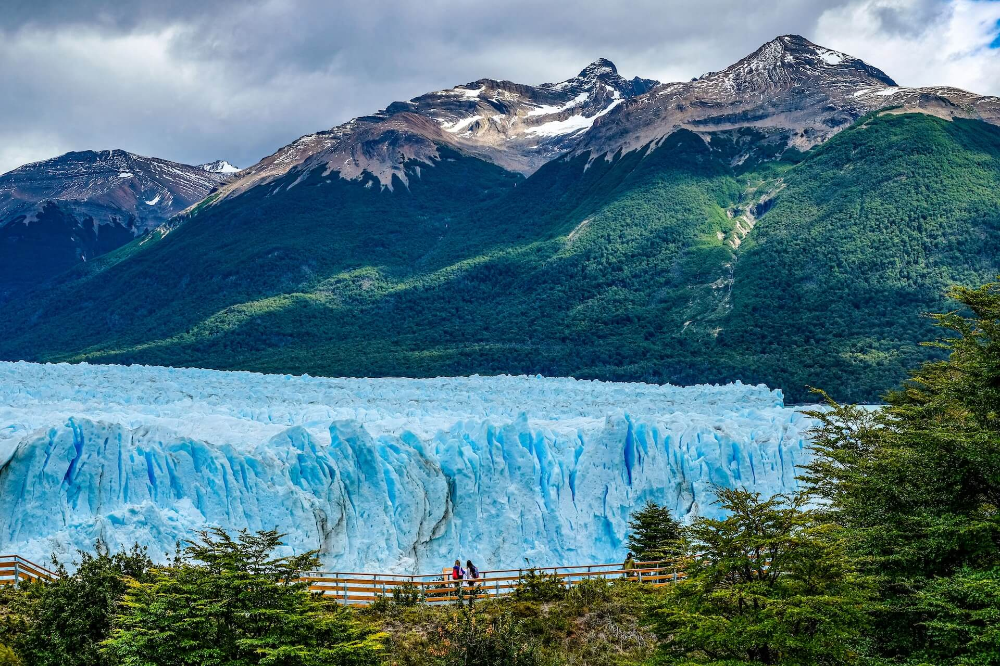
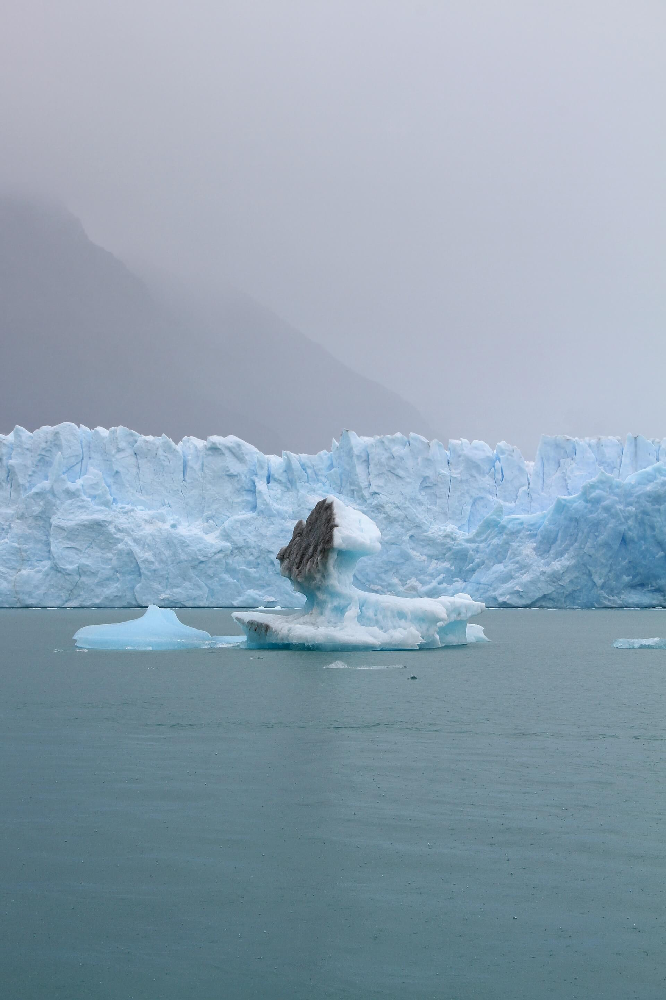
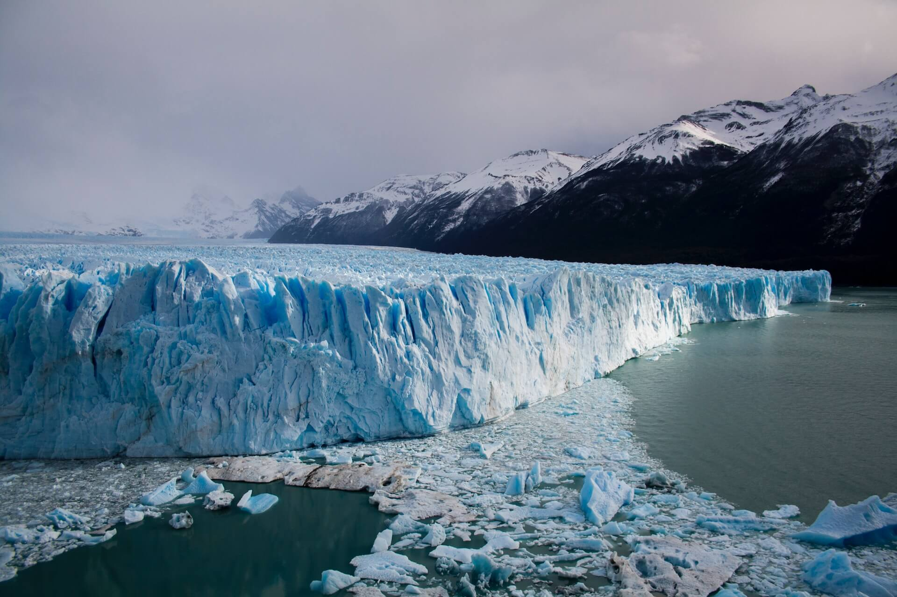

One of the city's most iconic monuments is the needle-like Obelisco,
soaring 67m above the oval Plaza de la Republica on busy Av 9 de Julio.
It was erected in 1936 on the 400th anniversary of the first Spanish
settlement on the Rio de la Plata. It's ground zero for celebrations
after major soccer victories, when boisterous fans gather at the
Obelisco to sing, jump in unison, honk horns and drink beer.

The Iguazu Falls are the largest waterfall system in the world.
Stretching almost 3km along the border of Argentina and Brazil,
the falls are made up of roughly 275 different vertical drops,
with heights varying from 60 meters - 82 meters. This makes the
Iguazu Falls taller than Niagara Falls and twice as wide.



Perhaps the world's most impressive glacier, Perito Moreno Glacier in
Los Glaciares National Park is a must-see phenomenon and a highlight
for many on a luxury trip to Argentina. Since its UNESCO inscription in
1981, watching the baby blue ice break away from the glacier
and plunge into the ice field below never seems to get old.


